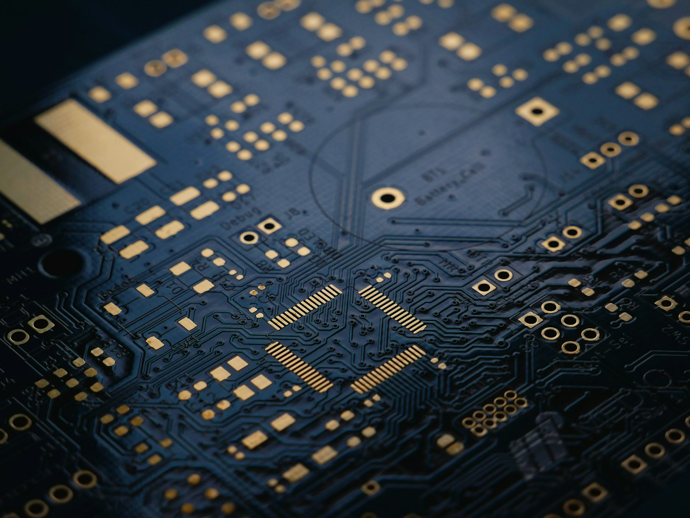
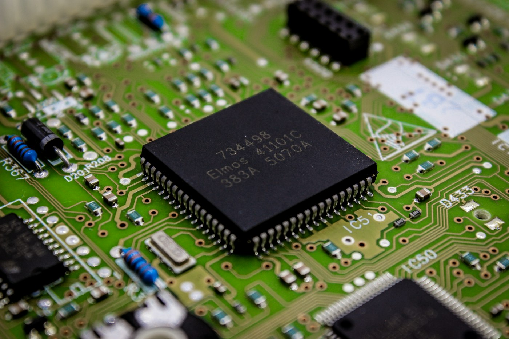

ReVision
Smart glasses that read a few simple signals and tell you, gently, when your focus is drifting.
How the Signals Flow
Sensors in the frame collect data. A small processor sends it to a phone app, which shows the suggestions.
3D Model & Prototype
Our prototype is still being planned. Views of the 3D model and the prototype will appear here.
Core Design Elements
Eye Cameras
Two small cameras in the frame follow eye movements, blinks and pupil changes.
Heart-Rate Sensor
A sensor at the nose pad adds context about how alert you are.
Light Sensor
Measures the light around you, which can quietly make focusing harder.
Outward Camera
Notices what is competing for your attention in front of you.
The electronics are planned to sit in an ordinary frame, so people who wear prescription lenses can keep using their own. ReVision is not a medical device and does not diagnose anything.
Inside the Frame
Small electronics are what turn a frame into a sensing device. These are the kinds of components we are researching.


Illustrative photos of electronics. They are not our prototype.
ReVision App
The glasses collect the signals. The phone app turns them into suggestions you can act on. The app is still being planned.
Real-Time Alerts
When your focus seems to be drifting, a short notification suggests what you can do.
Long-Term View
See how your focus changes over days and weeks, with no tests or tasks to complete.
Personal Suggestions
Recommendations are shaped around your own patterns, not an average person.